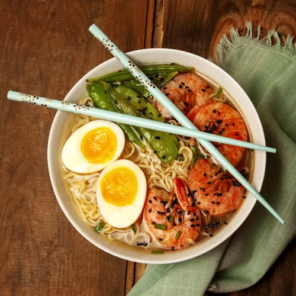

Favorites Page Design
Things I love • Everyday inspirations, rituals & culinary comforts

Hakata Tonkotsu · Marufuku SF
Rich 20-hour simmered broth, springy katame noodles, seasoned soft egg, and black garlic oil.
Studio Ghibli · Hayao Miyazaki
An enduring masterclass in worldbuilding and hand-drawn art.
Marin County Coastal Bluffs
Crashing Pacific waves, wild tule elk wandering the ridges, and the cypress tree tunnel.